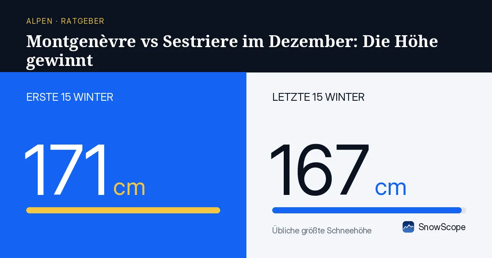
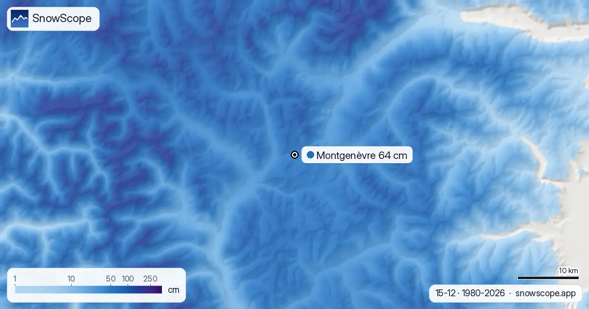

Montgenèvre vs Sestriere im Dezember: Die Höhe gewinnt
Wenn du für ein Skiwochenende im Dezember an die französisch-italienische Grenze fährst, hat Montgenèvre gegenüber Sestriere die Nase vorn. Die Talstation liegt auf 1.795 m mit 56 cm üblichem Dezember-Schnee, verglichen mit 24 cm auf 1.600 m in Sestriere. Weiter oben bieten beide Orte guten Schnee, aber Montgenèvre garantiert dir schon ab den Liften eine sicherere Schneelage.
Die Live-Schneeprognose für Montgenèvre in der SnowScope-AppSchneehöhen, Pulverschnee-Alarme und 3D-Karte, gratis.
Eine Basis in guter Höhe
Für Wochenendfahrer ist ein Start in der Höhe stressfrei. Das Skigebiet von Montgenèvre umfasst 62 km Pisten und 24 Lifte zwischen 1.795 m und 2.581 m, was 786 m Höhenunterschied bedeutet. Da die Lifte bereits auf 1.795 m starten, bist du sofort im Schnee.
Die heutige Schneeschätzung vom 13. November 2026 zeigt 0 cm an der Basis, 5 cm in der Mitte (2.188 m) und 11 cm am Gipfel (2.581 m). Der Neuschnee für die nächsten 7 Tage wird auf 23 cm an der Basis, 36 cm in der Mitte und 52 cm am Gipfel geschätzt. Für den zweiwöchigen Ausblick vom 13. bis 26. November 2026 liegt die Prognose für die mittlere Lage und darüber zwischen 61 und 95 cm.

Typischer Schnee vs. dünne Dezember
In unserer Schneehistorie aus 46 vergangenen Wintern (1980-81 bis 2025-26) liegen in Montgenèvre üblicherweise 56 cm Schnee im Dezember an der Basis und 55 cm am 15. Dezember. In einem schneearmen Dezember (1 von 10 Wintern) sinkt die Schneehöhe unter 22 cm, während sie in einem schneereichen Dezember (1 von 10 Wintern) über 102 cm liegt. Letzten Winter (2025-26) lagen im Schnitt 37 cm an der Basis, und der schneearmste Dezember war 2015-16 mit 13 cm, verglichen mit 123 cm im schneereichsten Dezember 1996-97.
Je höher du kommst, desto mehr Schnee liegt dort. In der Mitte (2.188 m) sind es im Schnitt 65 cm im Dezember (64 cm am 15. Dezember), mit einer Spanne von 28 cm in einem mageren Winter bis 115 cm in einem reichen. Am Gipfel (2.581 m) sind es im Schnitt 78 cm, mit 36 cm in mageren und 139 cm in reichen Wintern.
Das Timing ist wichtig für den Trip. An der Basis kommen 30 cm oder mehr in 61 % der vergangenen Winter zwischen dem 1. und 7. Dezember vor und 76 % zwischen dem 8. und 14. Dezember, steigend auf 89 % vom 15. bis 21. Dezember und 96 % vom 22. bis 28. Dezember (wobei 50 cm oder mehr in 35 %, 46 %, 59 % und 72 % der Fälle erreicht werden). In der Mitte liegen 30 cm oder mehr in 70 %, 87 %, 98 % und 98 % der vergangenen Winter. Am Gipfel werden 30 cm oder mehr in 83 %, 91 %, 98 % und 98 % erreicht.
Was der Skipass kostet
Für preisbewusste Wochenendfahrer machen die Daten einen Unterschied. Auf der offiziellen Seite kostet ein 1-Tages-Skipass für Erwachsene in Montgenèvre 45,50 EUR bis zum 18. Dezember 2026. Ab dem 19. Dezember 2026 beginnt die Hochsaison und der 1-Tages-Pass kostet 56,00 EUR. Für 6 Tage kostet der Skipass Montgenèvre + Monts de la Lune in der Hochsaison ab dem 19. Dezember 2026 301,00 EUR.
Die Preise für Sestriere wurden auf der offiziellen Seite nicht geprüft, daher geben wir keine Preise an und behaupten nicht, welcher Ort günstiger ist.
Montgenèvre gegen Sestriere jenseits der Grenze
Sestriere liegt hinter der Grenze in Italien mit 58 km Pisten und 22 Liften von 1.600 m bis 2.786 m (1.186 m Höhenunterschied). Die höheren Lifte haben im Dezember üblicherweise 91 cm (90 cm am 15. Dezember), mit 41 cm in einem mageren und 163 cm in einem reichen Winter.
Unten an den Liften ist der Dezember in Sestriere auf 1.600 m jedoch oft dünn. Die übliche Schneehöhe im Dezember beträgt 24 cm (25 cm am 15. Dezember), fällt in 1 von 10 Wintern unter 6 cm und liegt in einem reichen Winter über 57 cm. In den vier Wochen erreicht Sestriere an der Basis 30 cm oder mehr nur in 26 %, 33 %, 41 % und 48 % der vergangenen Winter (und 50 cm oder mehr in 9 % bis 17 %). In der Mitte (2.193 m) liegt die übliche Dezember-Schneehöhe bei 51 cm.
Wie sich 46 Winter verändert haben
In unserer Schneehistorie waren die Dezember-Durchschnittswerte in Montgenèvre in den letzten 15 Wintern (2011-12 bis 2025-26) höher als in den ersten 15 Wintern (1980-81 bis 1994-95). An der Basis stieg der Dezember-Durchschnitt von 41 cm auf 68 cm. In der Mitte stieg er von 49 cm auf 76 cm und am Gipfel von 62 cm auf 89 cm, was trotz magerer Jahre wie 2015-16 eine stärkere Schneelage zu Saisonbeginn zeigt.
Tipps für Skifahrer
- Ziele auf den 8.-14. Dezember oder fahre vor dem 19. Dezember 2026, wenn du den 45,50 EUR 1-Tages-Pass nutzen willst, bei 30 cm oder mehr in der Mitte in 87 % bis 98 % der vergangenen Winter.
- Bleib in der Mitte (2.188 m) und am Gipfel (2.581 m), wenn du zwischen dem 1. und 7. Dezember fährst, wo in 70 % bzw. 83 % der Winter 30 cm oder mehr liegen, statt nur 61 % an der Basis.
- Buche deinen Montgenèvre-Skipass auf der offiziellen Seite vor Beginn der Hochsaison am 19. Dezember 2026 für 56,00 EUR.
- Prüfe den Lawinenlagebericht vor dem Skifahren abseits der Piste, besonders nach frühem Schneefall auf dünnen Unterlagen.
Weitere Karten (externe Seiten)
Quellen und Nachweise
- Montgenèvre, official ski pass prices 2026-27 skipass.montgenevre.com/fr/tarifs-guichet
- SnowScope, December snow at three heights and today's snow map snowscope.app/
Zu diesen Zahlen
Schneewerte: SnowScope-Schneehistorie, 46 vergangene Winter (1980-81 bis 2025-26) auf drei Höhen jedes Skigebiets (ein höhenkorrigiertes Modell der Vergangenheit: eine Schätzung für eine Fläche, keine Messungen des Skigebiets); Dezemberwerte aus den täglichen Schneehöhen dieser Winter. Aktueller Schnee und Zwei-Wochen-Ausblick: SnowScope-Prognosen (Ausblick aus ECMWF und GFS, eine Spanne, kein Versprechen). Lifte und Pisten: OpenSkiMap-Kartierung. Preise: die offiziellen Seiten unten, gelesen am 2026-11-13; Preise können sich ändern, vor der Buchung prüfen.
Offizielle Lawinenlageberichte: Météo-France – Bulletin d'estimation du risque d'avalanche
Diesen Bericht zitieren
Für Forschung, Lehre oder Presse: Zahlen und Grafiken sind unter CC BY 4.0 mit dieser Quellenangabe frei nutzbar.
SnowScope (2026), Montgenèvre vs Sestriere im Dezember: Die Höhe gewinnt, https://snowscope.app/blog/de/2026/11/montgenevre-december-skiing-snow-record-cost-2026.html, abgerufen am 2026-11-14
SnowScope (Atlas Labs). (2026, November 14). Montgenèvre vs Sestriere im Dezember: Die Höhe gewinnt. SnowScope snow reports. https://snowscope.app/blog/de/2026/11/montgenevre-december-skiing-snow-record-cost-2026.html
BibTeX
@misc{snowscope2026montgenevredecemberskiin,
author = {{SnowScope (Atlas Labs)}},
title = {Montgenèvre vs Sestriere im Dezember: Die Höhe gewinnt},
year = {2026},
month = nov,
howpublished = {\url{https://snowscope.app/blog/de/2026/11/montgenevre-december-skiing-snow-record-cost-2026.html}},
note = {Published 2026-11-14 13:29 UTC; accessed 2026-11-14}
}· CC BY 4.0 · Methoden, Daten und Werkzeuge →
Montgenèvre: Schnee und Temperatur nach Höhe, dieser Winter vs letzter (Werkzeuge) →
Montgenèvre folgen
Gratis: eine Nachricht, wenn Neuschnee kommt, und jeden Morgen die Vorhersage.